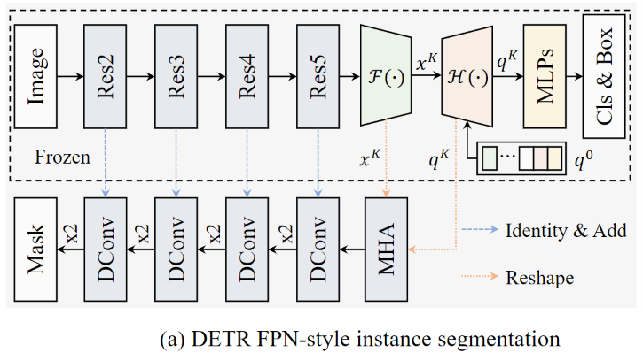

论文题目：SOLQ: Segmenting Objects by Learning Queries
论文链接：https://arxiv.org/abs/2106.02351
发表时间：2021-06
SOLQ基于近期所提出的 DETR的实例分割的端到端框架，通过学习统一的查询来分割目标。不同于DETR通过引入类似于MaskRCNN中的Mask分支完成分割，SOLQ中的每个查询代表一个对象，里面包含了所有的class, location 和 mask信息。

如上图所示，对于DETR，它通过设置一个长采样卷积结构完成对于实例mask的获取

而对于SOLQ 来说，